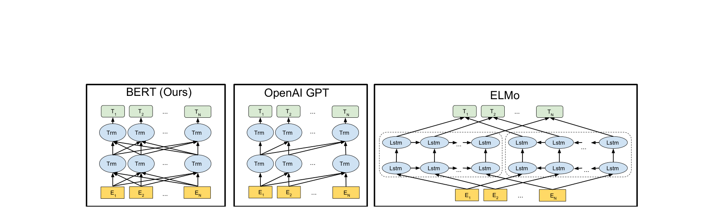
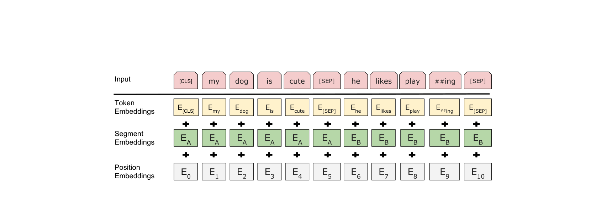

from transformers import BertTokenizer, BertForSequenceClassification
from transformers import Trainer, TrainingArguments
import torch
# 加载预训练的 BERT-Base 模型和分词器
tokenizer = BertTokenizer.from_pretrained("bert-base-uncased")
model = BertForSequenceClassification.from_pretrained(
"bert-base-uncased",
num_labels=2 # 二分类：正面/负面
)
# 准备数据
texts = [
"This movie is absolutely fantastic!",
"Terrible waste of time, awful acting.",
"A masterpiece of modern cinema.",
"I fell asleep halfway through."
]
labels = [1, 0, 1, 0] # 正面=1, 负面=0
encodings = tokenizer(
texts,
padding=True,
truncation=True,
max_length=128,
return_tensors="pt"
)
# 创建 Dataset
class SentimentDataset(torch.utils.data.Dataset):
def __init__(self, encodings, labels):
self.encodings = encodings
self.labels = labels
def __getitem__(self, idx):
item = {k: v[idx] for k, v in self.encodings.items()}
item["labels"] = torch.tensor(self.labels[idx])
return item
def __len__(self):
return len(self.labels)
dataset = SentimentDataset(encodings, labels)
# 微调配置
training_args = TrainingArguments(
output_dir="./bert-sentiment",
num_train_epochs=3,
per_device_train_batch_size=32,
learning_rate=2e-5, # BERT 微调推荐: 2e-5 到 5e-5
weight_decay=0.01,
warmup_ratio=0.1,
logging_steps=10,
)
trainer = Trainer(
model=model,
args=training_args,
train_dataset=dataset,
)
trainer.train()第13章：BERT——双向预训练路线
Pre-Training of Deep Bidirectional Transformers for Language Understanding
NLP
Deep Learning
Pre-training
BERT
Transformer
BERT：用掩码语言模型（MLM）实现真正的双向预训练。通过随机遮蔽输入token并让模型根据完整的左右上下文来预测被遮蔽的词，BERT在11个NLP基准任务上全面超越了GPT和ELMo，开启了预训练模型的’BERT时代’。
核心问题：如何让预训练模型在每个位置同时利用左右两侧的上下文，获得真正的双向表示？
历史坐标：2018年10月 | Devlin et al. “BERT: Pre-Training of Deep Bidirectional Transformers for Language Understanding” | Google AI Language
Tip本章参考来源
0.1 论文
- Devlin et al. (2019) “BERT: Pre-Training of Deep Bidirectional Transformers for Language Understanding” (arXiv:1810.04805) — 参考了 Section 3（BERT模型设计）、Section 4（实验）、Section 5（消融实验）；从论文PDF提取了4张原图：Figure 1（预训练与微调流程）、Figure 2（输入表示）、Figure 3（BERT/GPT/ELMo架构对比）、Figure 4（四类微调任务）；改编了2个算法伪代码框（MLM 80-10-10策略、预训练样本构造流程）
- Radford et al. (2018) “Improving Language Understanding by Generative Pre-Training” (GPT) — 参考了与BERT的架构对比
- Liu et al. (2019) “RoBERTa: A Robustly Optimized BERT Pretraining Approach” (arXiv:1907.11692) — 参考了对NSP的消融分析
0.2 教材
- D2L Section 15.8-15.10 — 参考了教学组织方式和代码实现思路
- SLP3 Chapter 11 — 参考了BERT在NLP任务中的定位和讲解框架
0.3 课程
- Stanford CS224N Lecture 9 (2025) “Pretraining” — 参考了BERT预训练目标的讲解角度
- Princeton COS 484 (Danqi Chen) — 参考了BERT作者之一对预训练设计决策的解释
1 从上一章说起
上一章我们详细介绍了GPT——第一个将Transformer与全模型微调相结合的预训练方案。GPT用Transformer Decoder做自回归语言建模，然后在下游任务上微调整个模型参数，确立了”预训练 + 微调”的现代NLP范式。在12个基准任务中的9个上，GPT达到了当时的最佳水平，特别是在常识推理（+8.9%）和语言可接受性（+10.4%）上的提升令人印象深刻。
然而，上一章结尾我们也揭示了GPT的一个根本限制：单向注意力。
因为GPT使用因果掩码（causal mask），每个位置只能看到它左侧的token。回忆我们在上一章中构造的数值例子——在处理”The cat sat”时，“The”的注意力权重是\([1.00, 0.00, 0.00]\)，它只能关注自己；“cat”的权重是\([0.35, 0.65, 0.00]\)，能看到”The”和自己，但完全看不到”sat”。这种单向限制对于语言生成来说是自然的——你不能在写下一个词的时候”偷看”未来——但对于语言理解来说却是一个严重的障碍。
考虑句子”I went to the bank to deposit my check”。当模型处理”bank”这个词时，如果只能看到左侧的”I went to the”，它无法确定”bank”指的是金融机构还是河岸。只有看到右侧的”to deposit my check”，正确的语义才能被锁定。GPT的单向注意力让模型在处理”bank”时对右侧的关键线索一无所知。
ELMo试图解决这个问题，但它的方案是”分离式双向”——两个独立的单向LSTM分别从左到右和从右到左处理序列，然后将表示拼接在一起。这种拼接并不等于真正的双向：前向LSTM在编码”bank”时只看到了左侧上下文，后向LSTM在编码”bank”时只看到了右侧上下文，两者从未在模型内部进行深度交互。
2018年10月，也就是GPT发表仅4个月之后，Google AI Language团队的Jacob Devlin等人提出了一个优雅的解决方案。
💡 本章核心洞察：用掩码语言模型（Masked Language Model, MLM）替代因果语言建模，让Transformer Encoder在预训练时真正融合双向上下文——不是拼接两个单向模型的输出，而是在同一个深层网络的每一层都让信息双向流动。
2 问题的本质是什么？
2.1 理解任务为什么需要双向上下文？
在深入BERT的技术细节之前，让我们先理解一个更基本的问题：为什么语言理解任务天然地需要双向信息？
自然语言的语义解析往往需要”全局视野”。一个词的含义不仅取决于它前面的内容，也取决于它后面的内容。语言学中有一个经典概念叫做消歧（disambiguation）——同一个词形在不同上下文中可能表达完全不同的语义。英语中约有7%的常用词是多义词，而在实际文本中，多义词出现的频率远高于7%，因为高频词往往有更多的义项。
更深层地说，语言理解不仅需要”逐词理解”，还需要”关系推理”。在自然语言推理（NLI）任务中，模型需要判断”A man is sleeping”是否可以从”A man is resting on a couch”推导出来。这需要”sleeping”和”resting”之间建立语义对应，“a man”在两个句子中建立共指关系。这些关系的建立需要模型在同一时刻看到两个句子的完整内容，并在它们之间建立交叉注意力。
那么，为什么不能简单地使用双向Transformer Encoder来做语言建模呢？这里有一个看似简单却非常深刻的技术障碍。
2.2 双向性与语言建模的矛盾
标准的语言建模目标是给定前文预测下一个词：\(P(w_t \mid w_1, \ldots, w_{t-1})\)。GPT使用因果掩码来实现这一点——每个位置只能看到左侧的token，因此预测\(w_t\)时不会”偷看”到\(w_t\)本身或它之后的内容。
但如果我们使用双向Transformer Encoder（没有因果掩码），每个位置可以看到所有其他位置——包括要预测的位置本身。在这种情况下，让模型”预测下一个词”变得毫无意义：模型可以直接通过注意力机制”看到”目标词，然后原样复制输出。这不是学习语言，而是作弊。
ELMo用一种保守的方式回避了这个矛盾：训练两个独立的单向模型，确保每个方向都不会泄漏信息，最后拼接。但这种方案的代价是两个方向的信息永远无法在模型内部深度融合。
GPT选择了另一种保守的方式：接受单向的限制，换取架构的简洁性和生成的能力。
那么，有没有一种方法可以既使用双向Transformer Encoder，又避免信息泄漏？
BERT的回答是：不要预测下一个词——预测被遮蔽的词。
2.3 从”预测下一个”到”填空”
BERT的核心洞察可以用一个直觉来理解：把预训练任务从”续写作文”变成”完形填空”。
传统的语言建模就像写作文——给你一个开头”Once upon a time”，让你续写下一个词。续写天然地是从左到右的过程，因此模型只能看到左侧的上下文。
BERT的掩码语言模型则像完形填空——给你一个完整的句子”I went to the ___ to deposit my check”，让你猜被遮蔽的词。填空不要求特定的方向——你自然地会同时参考左侧的”I went to the”和右侧的”to deposit my check”来确定答案是”bank”。
这个简单的变换解决了双向性与语言建模之间的矛盾：被遮蔽的词不在输入中（或被替换为特殊标记），所以模型无法”作弊”直接复制；同时，所有未被遮蔽的位置都可以看到彼此，信息可以双向自由流动。
3 核心思想与直觉
3.1 关键洞察：完形填空式的预训练
BERT的全名是 Bidirectional Encoder Representations from Transformers——双向Transformer编码器表示。名字本身就在强调”双向”（Bidirectional），因为这正是它相对于GPT的核心创新。
如果把GPT比作一个只能从左往右阅读的读者，那么BERT就像一个可以纵览全文的读者。GPT在处理每个词时就像戴着一副”遮光眼镜”——只能看到左边，右边一片漆黑。BERT则摘掉了这副眼镜，让每个词都能同时感知左右两侧的完整上下文。
但BERT面临的挑战是：如果读者能看到全文，那让他”猜下一个词”就没有意义了（答案就在眼前）。BERT的解决方案极其巧妙——在全文中随机”涂掉”一些词，然后让读者根据剩余的内容来猜测被涂掉的是什么。这就是掩码语言模型（MLM）的本质。
3.2 两个预训练目标
BERT使用两个预训练目标联合训练。
目标一：掩码语言模型（Masked Language Model, MLM）。随机选择输入中15%的token进行”遮蔽”，然后让模型预测被遮蔽的原始token。这迫使模型学习深层的双向语言理解能力——要准确填空，模型必须同时理解左右两侧的上下文，以及词汇之间的语法和语义关系。
目标二：下一句预测（Next Sentence Prediction, NSP）。给定两个句子A和B，模型判断B是否是A在原文中的真实下一句。这个目标旨在让模型学习句子级别的关系理解——许多重要的NLP任务（如问答、自然语言推理）需要理解两个句子之间的关系。
3.3 架构选择：为什么是Transformer Encoder？
GPT选择了Transformer Decoder（因果注意力），BERT选择了Transformer Encoder（双向注意力）。这个选择背后有清晰的逻辑。
GPT的目标是因果语言建模——预测下一个词，因此需要因果掩码来防止信息泄漏。但BERT的目标是MLM——预测被遮蔽的词，遮蔽本身已经防止了信息泄漏（被遮蔽的词不在输入中），因此不需要因果掩码。没有了因果掩码的约束，Transformer Encoder的每个位置都可以自由地关注所有其他位置，实现真正的双向表示学习。
换句话说，GPT和BERT在”如何防止作弊”这个问题上选择了不同的策略。GPT通过限制视野来防止作弊——你看不到答案所在的位置。BERT通过隐藏答案来防止作弊——答案所在的位置被替换成了一个无意义的[MASK]标记，即使你能看到那个位置，也得不到任何有用的信息。
下图直观地展示了三种预训练架构的核心差异。BERT的双向Transformer让每个位置都能关注所有其他位置（箭头交叉连接）；OpenAI GPT的单向Transformer只允许从左到右的信息流动（箭头单向连接）；ELMo则使用两个独立的LSTM分别处理前向和后向，最后拼接表示。

Source: Devlin et al. (2019) “BERT: Pre-Training of Deep Bidirectional Transformers for Language Understanding”, Figure 3. arXiv:1810.04805

Source: Devlin et al. (2019) “BERT: Pre-Training of Deep Bidirectional Transformers for Language Understanding”, Figure 1. arXiv:1810.04805
4 技术细节
4.1 模型架构
BERT的架构是标准的Transformer Encoder——与第8章介绍的Transformer编码器完全一致。论文提供了两个规模的模型：
| 超参数 | BERT-Base | BERT-Large |
|---|---|---|
| 层数（\(L\)） | 12 | 24 |
| 隐藏维度（\(H\)） | 768 | 1024 |
| 注意力头数（\(A\)） | 12 | 16 |
| 每头维度 | 64 | 64 |
| FFN内部维度 | 3072 | 4096 |
| 总参数量 | 110M | 340M |
BERT-Base的参数量与GPT-1（117M）几乎相同，这是有意为之的——Devlin等人想要在公平的条件下对比双向Encoder与单向Decoder的优劣。BERT-Large则将参数量扩大到340M，探索更大规模带来的增益。
值得注意的是BERT使用了可学习的位置嵌入，最大序列长度为512 token，这与GPT的选择一致。分词器使用的是WordPiece（第3章讨论的子词分词方法之一），词汇表大小为30,522个token。
4.2 输入表示
BERT的输入表示设计是它区别于GPT的一个重要方面，因为BERT需要处理单句和句对两种输入格式。
每个输入序列的第一个token总是特殊标记[CLS]（classification的缩写）。如果输入是一个句对，两个句子用特殊标记[SEP]分隔。最终的输入嵌入是三种嵌入的逐元素相加：
\[ \text{Input} = \text{Token Embedding} + \text{Segment Embedding} + \text{Position Embedding} \]
Token Embedding 是标准的WordPiece嵌入，将每个token映射到一个\(H\)维的向量。
Segment Embedding 用来区分两个句子。属于句子A的所有token共享一个可学习的嵌入\(E_A\)，属于句子B的所有token共享另一个可学习的嵌入\(E_B\)。如果输入只有一个句子，则所有token都使用\(E_A\)。这种设计让模型可以从嵌入层面区分”这个词属于哪个句子”。
Position Embedding 是可学习的位置嵌入，与GPT相同，最大支持512个位置。
以一个具体的例子来说明。假设输入是句对”I love NLP”和”It is fun”，经过WordPiece分词后，完整的输入序列是：
\[ [\text{CLS}] \;\; \text{I} \;\; \text{love} \;\; \text{NLP} \;\; [\text{SEP}] \;\; \text{It} \;\; \text{is} \;\; \text{fun} \;\; [\text{SEP}] \]
对应的Segment ID是：
\[ A \;\; A \;\; A \;\; A \;\; A \;\; B \;\; B \;\; B \;\; B \]

Source: Devlin et al. (2019) “BERT: Pre-Training of Deep Bidirectional Transformers for Language Understanding”, Figure 2. arXiv:1810.04805
[CLS]的设计值得单独讨论。它始终位于序列的第一个位置，经过12层（或24层）双向注意力之后，[CLS]的最终表示\(h_{[\text{CLS}]}\)已经融合了整个序列的信息——因为在每一层中，它都可以通过注意力机制”看到”所有其他token。因此，\(h_{[\text{CLS}]}\)可以作为整个句子（或句对）的汇聚表示（pooled representation），直接用于句子级别的分类任务。这与GPT取序列最后一个token的表示来做分类是异曲同工的，但[CLS]的优势在于它从第一层开始就在”综合”全局信息，而不是像GPT那样只能利用单向累积的信息。
4.3 预训练目标一：掩码语言模型（MLM）
MLM的核心思想很简单：随机选择输入中的一些token，将它们”遮蔽”掉，然后让模型预测被遮蔽的原始token。但细节中隐藏着许多精妙的设计决策。
为什么遮蔽15%？ Devlin等人选择遮蔽每个序列中15%的token。这个比例是一个权衡的结果。如果遮蔽太少（比如5%），每个序列能提供的训练信号就太少——模型需要处理很多次才能积累足够的监督信号，训练效率低下。如果遮蔽太多（比如50%），剩余的上下文就不够丰富，模型很难做出准确的预测——就像一道完形填空题如果挖掉一半的字，人类也很难填对。15%在”训练信号充足”和”上下文足够丰富”之间取得了一个经验上的平衡点。
这里有一个微妙但重要的效率问题。在标准的语言建模中（如GPT），模型对序列中的每一个位置都做预测（预测下一个词），因此每个token都贡献一个训练信号。但在MLM中，只有被遮蔽的15%的token贡献训练信号，其余85%的token不参与损失计算。这意味着BERT需要比GPT多看大约6-7倍的数据才能获得同等数量的训练信号。从训练效率的角度看，这是MLM相对于标准语言建模的一个内在代价。
为什么不能全部替换为[MASK]？ 一个直觉的实现方式是把所有被选中的token都替换成[MASK]标记。但这会造成一个严重的预训练-微调不一致问题：在预训练时，输入中充满了[MASK]标记；在微调时，输入是正常的自然文本，没有任何[MASK]。模型在预训练时学会了”看到[MASK]就预测原词”，但在微调时永远不会看到[MASK]，这让预训练学到的部分模式变得无用。
80-10-10策略。为了缓解这个不一致，BERT对被选中的15%的token采用了三种不同的处理方式：
- 80%的概率：替换为
[MASK]标记（标准遮蔽） - 10%的概率：替换为词汇表中的一个随机token
- 10%的概率：保持不变
这个设计的逻辑是什么？80%的[MASK]确保模型的主要训练信号来自于真正的”填空”——模型看到一个[MASK]，需要根据上下文推断原词。10%的随机替换迫使模型不能完全信任输入——即使看到一个正常的词，它也可能是错误的替换，模型需要有能力判断”这个词在上下文中是否合理”。10%的保持不变则向模型展示了正常输入的样子——这个词没有被动过，它的表示应该尽量接近真实含义。后两种策略共同缓解了预训练与微调之间的分布差异。
你可能会问：随机替换不会”污染”模型的表示学习吗？考虑到随机替换的概率只有\(15\% \times 10\% = 1.5\%\)，平均每100个token中只有1.5个会被替换为随机词，这个噪声水平足够低，不会对模型的语言能力造成实质性的损害。
NoteAlgorithm 1: Masked Language Model — Input Construction (Devlin et al., 2019)
输入: token序列 x = (x_1, x_2, ..., x_n), 遮蔽比例 p = 0.15
输出: 修改后的输入 x̃, 目标标签 y
1. 随机选择 ⌊n × p⌋ 个位置，构成遮蔽集合 M
2. FOR each position i ∈ M:
3. 采样随机数 r ~ Uniform(0, 1)
4. IF r < 0.8:
5. x̃_i ← [MASK] # 80%: 替换为 [MASK] 标记
6. ELSE IF r < 0.9:
7. x̃_i ← random(V) # 10%: 替换为词汇表中的随机token
8. ELSE:
9. x̃_i ← x_i # 10%: 保持原始token不变
10. y_i ← x_i # 目标始终是原始token
11. FOR each position i ∉ M:
12. x̃_i ← x_i # 未选中的位置保持不变
13. y_i ← IGNORE # 不参与损失计算
14. RETURN x̃, y改编自: Devlin et al. (2019) “BERT: Pre-Training of Deep Bidirectional Transformers for Language Understanding”, Section 3.1 及 Appendix C.2. arXiv:1810.04805
MLM的损失函数可以形式化为：
\[ L_{\text{MLM}} = -\sum_{i \in \mathcal{M}} \log P(x_i \mid \tilde{\mathbf{x}}; \theta) \]
其中\(\mathcal{M}\)是被遮蔽的token位置集合，\(\tilde{\mathbf{x}}\)是经过80-10-10处理后的输入序列，\(x_i\)是位置\(i\)的原始token。只有被选中的15%的位置参与损失计算。
4.4 预训练目标二：下一句预测（NSP）
许多重要的NLP任务（如问答、自然语言推理）需要理解两个句子之间的关系。标准的语言建模——无论是GPT的因果LM还是BERT的MLM——都主要关注token级别的语言理解，缺乏显式的句子间关系建模。NSP正是为了填补这个空白。
NSP的设计非常简单：在构造预训练数据时，对于每个训练样本，50%的概率选择真实的连续句对（标签为IsNext），50%的概率将第二个句子替换为语料库中随机抽取的句子（标签为NotNext）。然后让模型基于[CLS]的最终表示，做二分类预测。
\[ P(\text{IsNext} \mid h_{[\text{CLS}]}) = \text{softmax}(h_{[\text{CLS}]} \cdot W_{\text{NSP}}) \]
NSP的总损失为：
\[ L_{\text{NSP}} = -\left[y \cdot \log P(\text{IsNext}) + (1 - y) \cdot \log P(\text{NotNext})\right] \]
BERT的总预训练损失是两个目标的简单求和：
\[ L = L_{\text{MLM}} + L_{\text{NSP}} \]
然而，NSP后来成为BERT设计中争议最大的部分。RoBERTa（Liu et al., 2019）通过系统的消融实验发现，去掉NSP反而能提高模型的性能。这个反直觉的结果在学术界引起了广泛讨论，我们将在”深入理解”一节中详细分析。
下面的算法将MLM和NSP两个目标的数据构造过程整合在一起，展示了一个完整的BERT预训练样本是如何从原始语料库中生成的。
NoteAlgorithm 2: BERT Pre-training Sample Construction (Devlin et al., 2019)
输入: 语料库 D（按文档组织），最大序列长度 T = 512
输出: 预训练样本 (x̃, segment_ids, is_next, mlm_targets)
# —— Step 1: 构造句对（用于 NSP）——
1. 从语料库中随机选择文档 d，从中选择连续句子 A
2. 采样随机数 r ~ Uniform(0, 1)
3. IF r < 0.5:
4. B ← A 在文档 d 中的真实下一句 # IsNext
5. is_next ← True
6. ELSE:
7. B ← 从语料库中随机抽取的句子 # NotNext
8. is_next ← False
9. 截断使 len(A) + len(B) ≤ T - 3 # 为 [CLS], [SEP], [SEP] 预留
# —— Step 2: 构造输入序列 ——
10. tokens ← [CLS] + A + [SEP] + B + [SEP]
11. segments ← [A...A] (len(A)+2个) + [B...B] (len(B)+1个)
12. positions ← [0, 1, 2, ..., len(tokens)-1]
# —— Step 3: 应用 MLM 遮蔽（Algorithm 1）——
13. x̃, mlm_targets ← MLM_MASK(tokens, p=0.15) # 调用 Algorithm 1
14. RETURN (x̃, segments, positions, is_next, mlm_targets)改编自: Devlin et al. (2019) “BERT: Pre-Training of Deep Bidirectional Transformers for Language Understanding”, Section 3.1, 3.2 及 Appendix A.2. arXiv:1810.04805
4.5 预训练数据
BERT在两个大规模语料库上预训练：
BooksCorpus（800M词）——与GPT-1使用的相同数据源，包含超过7000本未出版书籍的连续文本。
英文Wikipedia（2,500M词）——只提取正文文本，去掉了列表、表格和标题。
两个数据源合计约33亿词（3.3B words），比GPT-1的8亿词大了约4倍。这个数据量的差异是BERT性能优势的一个贡献因素，尽管不是主要因素——后来的消融实验表明，双向性本身带来的提升远大于数据量增加带来的提升。
训练使用256个序列的batch size，每个序列最长512 token，总共训练1,000,000步（约40个epoch）。这在当时需要4个Cloud TPU（BERT-Base）或16个Cloud TPU（BERT-Large）训练4天。
4.6 关键设计决策
让我们系统地审视BERT的几个关键设计决策，理解每个选择背后的权衡。
4.6.1 决策1：Encoder-only 而非 Decoder-only 或 Encoder-Decoder
决策：BERT只使用Transformer Encoder，没有Decoder。
原因：BERT的目标是学习通用的语言理解表示，而不是进行序列生成。Encoder的双向注意力天然适合理解任务——每个位置可以综合全局信息形成表示。Decoder的因果注意力限制了信息流动，主要适用于生成任务。
替代方案：使用Encoder-Decoder结构（如后来的T5）可以同时处理理解和生成任务，但需要设计更复杂的预训练目标。使用Decoder-only（如GPT）则无法获得双向表示。
影响：Encoder-only的选择让BERT在理解任务上获得了巨大优势，但同时也意味着BERT不适合直接用于文本生成。生成任务需要自回归地逐token产出，而Encoder的双向注意力在推理时无法处理”还没有生成的未来token”。这个限制后来促使研究者探索Encoder-Decoder（T5）和Decoder-only（GPT系列）架构。
4.6.2 决策2：WordPiece 而非 BPE
决策：BERT使用WordPiece分词，词汇表大小30,522。
原因：WordPiece是Google内部广泛使用的子词分词方法。与BPE的贪心合并策略不同，WordPiece使用最大化训练数据似然的标准来选择合并。在实践中，两者的差异不大，但WordPiece在Google的工程基础设施中有更好的支持。
影响：GPT使用BPE（40,000词），BERT使用WordPiece（30,000词）。词汇表大小的差异意味着同样的文本在BERT中可能被切分成更多的子词，序列长度更长。但30,000的词汇表在覆盖率和效率之间取得了较好的平衡。
4.6.3 决策3：为什么[CLS]放在句首？
决策：[CLS]始终作为序列的第一个token。
原因：Devlin等人的设计意图是让[CLS]作为整个序列的”汇聚器”——经过多层双向注意力后，它融合了序列中所有位置的信息。你可能会问：为什么不放在句末（像GPT那样取最后一个token的表示）？在双向Encoder中，放在哪里其实差别不大——因为每个位置都能看到所有其他位置，理论上任何位置经过充分的注意力交互后都可以汇聚全局信息。选择句首可能只是一个工程上的便利，使得[CLS]的位置固定且容易索引。
4.7 完整数值示例：MLM的工作过程
让我们通过一个具体的小规模例子来追踪BERT的MLM预训练如何工作。
设定：句子”The cat sat on the mat”，\(H = 4\)（隐藏维度），词汇表大小\(V = 10\)（简化），单层单头注意力。
Step 1: 选择遮蔽位置
序列长度为6，遮蔽比例15%。\(6 \times 15\% \approx 1\)，选择1个token进行遮蔽。假设随机选中了位置3的”sat”。
Step 2: 应用80-10-10策略
对于被选中的”sat”，按概率执行：
- 80%概率：替换为
[MASK]→ 输入变为”The cat[MASK]on the mat” - 10%概率：替换为随机词（比如”blue”）→ 输入变为”The cat blue on the mat”
- 10%概率：保持不变 → 输入保持”The cat sat on the mat”
假设这次落入80%的分支，输入变为 \([\text{CLS}], \text{The}, \text{cat}, [\text{MASK}], \text{on}, \text{the}, \text{mat}, [\text{SEP}]\)。
Step 3: 嵌入
假设Token + Position嵌入后得到（\(H = 4\)，只展示关键位置）：
\[ h_0 = \begin{bmatrix} \text{[CLS]:} & 0.1 & 0.2 & 0.1 & 0.3 \\ \text{The:} & 1.0 & 0.5 & 0.2 & 0.1 \\ \text{cat:} & 0.3 & 1.2 & 0.8 & 0.4 \\ \text{[MASK]:} & 0.0 & 0.0 & 0.0 & 0.0 \\ \text{on:} & 0.5 & 0.3 & 1.0 & 0.2 \\ \text{the:} & 0.9 & 0.5 & 0.2 & 0.1 \\ \text{mat:} & 0.4 & 0.8 & 0.6 & 1.1 \\ \text{[SEP]:} & 0.2 & 0.1 & 0.3 & 0.2 \end{bmatrix} \]
注意[MASK]的初始嵌入接近零——它是一个特殊标记，没有携带原词”sat”的任何信息。
Step 4: 双向注意力（关键差异！）
与GPT不同，BERT没有因果掩码。注意力分数矩阵没有\(-\infty\)的上三角遮蔽——每个位置可以自由地关注所有其他位置。
\[ \text{Attention Mask} = \begin{bmatrix} 1 & 1 & 1 & 1 & 1 & 1 & 1 & 1 \\ 1 & 1 & 1 & 1 & 1 & 1 & 1 & 1 \\ 1 & 1 & 1 & 1 & 1 & 1 & 1 & 1 \\ 1 & 1 & 1 & 1 & 1 & 1 & 1 & 1 \\ \vdots & & & & & & & \vdots \\ 1 & 1 & 1 & 1 & 1 & 1 & 1 & 1 \end{bmatrix} \]
全1矩阵——完全双向。对比上一章GPT的下三角矩阵，差异一目了然。
这意味着在处理[MASK]位置（原来的”sat”）时，注意力可以同时关注左侧的”The cat”和右侧的”on the mat”。假设经过注意力计算后，[MASK]位置的注意力权重为：
\[ \alpha_{\text{[MASK]}} = [0.02, 0.08, 0.25, 0.05, 0.18, 0.07, 0.30, 0.05] \]
解读：模型在预测[MASK]（原词”sat”）时，最关注的是”mat”（0.30）和”cat”（0.25），其次是”on”（0.18）。这非常合理——“cat”提供了主语信息（谁做了这个动作），“on the mat”提供了动作的目标（坐在什么上面），它们共同强烈暗示被遮蔽的词是某个表示位置关系的动词，如”sat”。
Step 5: 预测被遮蔽的词
经过12层（实际中）Transformer Encoder后，[MASK]位置的最终隐藏状态\(h_L^{\text{[MASK]}}\)融合了来自所有方向的丰富信息。将其通过一个线性层映射到词汇表维度，然后softmax：
\[ \text{logits} = h_L^{\text{[MASK]}} \cdot W_{\text{vocab}}^T + b \quad \in \mathbb{R}^{V} \]
\[ P(\cdot \mid \tilde{\mathbf{x}}) = \text{softmax}(\text{logits}) \]
假设得到的概率分布为：
| 词 | sat | ran | slept | stood | on | cat | … |
|---|---|---|---|---|---|---|---|
| 概率 | 0.42 | 0.15 | 0.12 | 0.10 | 0.03 | 0.02 | … |
模型给”sat”分配了最高的概率0.42，说明它成功地从双向上下文中推断出了被遮蔽的词。损失为 \(-\log(0.42) \approx 0.87\)。
对比GPT：如果用GPT的因果注意力来预测位置3的词，模型只能看到”The cat”——仅凭这两个词，“sat”、“ran”、“slept”、“ate”都是合理的续写。模型无法利用右侧的”on the mat”来缩小候选范围。BERT的双向注意力让”on the mat”直接参与了预测，显著提高了预测精度。
4.8 微调：一个模型，多种任务
BERT的微调方式延续了GPT的思路——在预训练模型顶部添加一个简单的任务特定层，然后微调整个模型的参数。但得益于双向Encoder的强大表示能力和灵活的输入格式（[CLS] + 句对 + [SEP]），BERT的微调框架更加统一。
句子级分类（如情感分析、语义相似度）。取[CLS]的最终表示\(h_{[\text{CLS}]} \in \mathbb{R}^H\)，通过一个新增的线性层\(W \in \mathbb{R}^{K \times H}\)映射到\(K\)个类别：
\[ P(c \mid \mathbf{x}) = \text{softmax}(h_{[\text{CLS}]} \cdot W^T) \]
句对分类（如NLI）。输入格式为[CLS] Sentence A [SEP] Sentence B [SEP]，同样取[CLS]的表示做分类。Segment Embedding帮助模型区分两个句子。
Token级分类（如命名实体识别）。每个token的最终表示\(h_i\)分别通过一个共享的线性层做分类：
\[ P(t_i \mid \mathbf{x}) = \text{softmax}(h_i \cdot W_{\text{tag}}^T) \quad \forall i \]
抽取式问答（如SQuAD）。输入格式为[CLS] Question [SEP] Passage [SEP]。模型需要从Passage中找到答案的起始和结束位置。具体做法是学习两个向量\(S, E \in \mathbb{R}^H\)，对Passage中每个位置\(i\)，计算它作为答案起始/结束位置的概率：
\[ P_{\text{start}}(i) = \frac{e^{S \cdot h_i}}{\sum_j e^{S \cdot h_j}}, \quad P_{\text{end}}(i) = \frac{e^{E \cdot h_i}}{\sum_j e^{E \cdot h_j}} \]
最终答案是使得\(P_{\text{start}}(i) \times P_{\text{end}}(j)\)最大的合法跨度\((i, j)\)（要求\(j \geq i\)）。
微调时新增的参数量非常少——分类任务只需要一个\(K \times H\)的线性层（对于BERT-Base和二分类任务，只有\(2 \times 768 = 1536\)个新参数），问答任务只需要两个\(H\)维的向量（\(2 \times 768 = 1536\)个新参数）。与预训练模型的1.1亿参数相比，微调新增的参数几乎可以忽略不计。

[CLS]表示做分类；(b) 单句分类（SST-2、CoLA）：同样取[CLS]；(c) 抽取式问答（SQuAD）：预测答案的起始和结束位置；(d) 序列标注（CoNLL NER）：每个token独立分类。
Source: Devlin et al. (2019) “BERT: Pre-Training of Deep Bidirectional Transformers for Language Understanding”, Figure 4. arXiv:1810.04805
4.9 复杂度分析
| 维度 | BERT-Base | GPT-1 | ELMo |
|---|---|---|---|
| 预训练参数 | 110M | 117M | 93.6M |
| 预训练数据 | 3.3B词 | 0.8B词 | 1B词 |
| 预训练方向 | 双向 | 单向（左→右） | 分离式双向 |
| 预训练信号效率 | 15%（仅[MASK]位置） |
100%（每个位置） | 100%（每个位置） |
| 微调新增参数 | \(K \times H\)（极少） | \(K \times H\) | \(L + 2\)个标量 |
| 推理复杂度 | \(O(n^2 \cdot d)\) | \(O(n^2 \cdot d)\) | \(O(n \cdot d^2)\) |
一个值得注意的权衡是预训练信号效率。GPT在每个位置都做预测（预测下一个词），每个token都贡献损失；BERT只在被遮蔽的15%的位置做预测。这意味着BERT的每个训练步提供的信号量只有GPT的约\(1/7\)。BERT通过更大的数据集（3.3B vs 0.8B词）和更长的训练时间（1M步 vs ~100个epoch）来弥补这个效率差距。
5 工程实践
5.1 使用Hugging Face微调BERT
下面展示在情感分析任务上微调BERT的标准工作流：
5.2 从零实现BERT的MLM预训练头
为了深入理解MLM的工作机制，下面是MLM预训练头的简化实现：
import torch
import torch.nn as nn
import torch.nn.functional as F
class BertMLMHead(nn.Module):
"""BERT 的掩码语言模型预训练头"""
def __init__(self, hidden_size, vocab_size):
super().__init__()
# 与论文一致：先过一个全连接层 + GELU + LayerNorm
self.dense = nn.Linear(hidden_size, hidden_size)
self.gelu = nn.GELU()
self.layer_norm = nn.LayerNorm(hidden_size)
# 映射到词汇表大小
self.decoder = nn.Linear(hidden_size, vocab_size)
def forward(self, hidden_states, masked_positions):
"""
Args:
hidden_states: Encoder输出 [batch, seq_len, hidden]
masked_positions: 被遮蔽的位置索引 [batch, num_masked]
"""
# 只取被遮蔽位置的隐藏状态
batch_size = hidden_states.size(0)
num_masked = masked_positions.size(1)
# 提取被遮蔽位置的表示
masked_hidden = torch.gather(
hidden_states, 1,
masked_positions.unsqueeze(-1).expand(-1, -1, hidden_states.size(-1))
) # [batch, num_masked, hidden]
# 预测原始 token
h = self.dense(masked_hidden)
h = self.gelu(h)
h = self.layer_norm(h)
logits = self.decoder(h) # [batch, num_masked, vocab_size]
return logits
def create_mlm_batch(tokens, vocab_size, mask_token_id, mask_prob=0.15):
"""
创建 MLM 训练样本：实现 80-10-10 策略
Args:
tokens: 原始 token ids [batch, seq_len]
vocab_size: 词汇表大小
mask_token_id: [MASK] 的 token id
mask_prob: 遮蔽概率（默认 15%）
"""
labels = tokens.clone()
input_ids = tokens.clone()
# Step 1: 随机选择 15% 的位置
probability_matrix = torch.full(tokens.shape, mask_prob)
# 特殊 token（[CLS], [SEP], [PAD]）不遮蔽
special_tokens_mask = (tokens == 0) | (tokens == 101) | (tokens == 102)
probability_matrix.masked_fill_(special_tokens_mask, value=0.0)
masked_indices = torch.bernoulli(probability_matrix).bool()
# 未被遮蔽的位置不参与损失计算
labels[~masked_indices] = -100 # CrossEntropy 会忽略 -100
# Step 2: 80-10-10 策略
# 80% 替换为 [MASK]
indices_replaced = (
torch.bernoulli(torch.full(tokens.shape, 0.8)).bool()
& masked_indices
)
input_ids[indices_replaced] = mask_token_id
# 10% 替换为随机 token
indices_random = (
torch.bernoulli(torch.full(tokens.shape, 0.5)).bool()
& masked_indices
& ~indices_replaced
)
random_words = torch.randint(vocab_size, tokens.shape, dtype=torch.long)
input_ids[indices_random] = random_words[indices_random]
# 剩余 10% 保持不变（input_ids 已经是原始值）
return input_ids, labels5.3 复现论文的关键细节
如果你要复现BERT的原始实验，以下几个容易被忽略的细节值得注意。
两阶段训练策略。BERT的预训练分为两个阶段：第一阶段使用序列长度128训练90%的步数（约900K步），第二阶段使用序列长度512训练剩余10%的步数（约100K步）。这个设计的原因是注意力计算的复杂度为\(O(n^2)\)——用长度128训练大部分步数可以显著加速训练，然后用长度512训练少量步数让模型适应长序列。
Whole Word Masking。原始BERT在子词（WordPiece token）级别做随机遮蔽，这意味着一个完整的词可能只有部分子词被遮蔽。例如”playing”可能被分为”play”和”##ing”两个子词，如果只遮蔽了”##ing”，模型很容易从”play”推断出答案。后来的改进版BERT采用了整词遮蔽（Whole Word Masking, WWM）——如果一个词的任何子词被选中，则该词的所有子词都被遮蔽。这迫使模型进行更深层的语义推理，而不是利用子词之间的拼写线索。
微调超参数的敏感性。Devlin等人推荐的微调超参数范围是：学习率\(\{2 \times 10^{-5}, 3 \times 10^{-5}, 5 \times 10^{-5}\}\)，batch size\(\{16, 32\}\)，训练\(\{2, 3, 4\}\)个epoch。他们报告说，在小数据集（如MRPC，3,668条训练样本）上，不同的超参数设置可能导致结果差异很大，因此建议进行网格搜索并使用开发集选择最佳配置。
5.4 实验结果
BERT在发布时在11个NLP基准任务上取得了最佳成绩，全面超越了GPT和ELMo：
GLUE基准（General Language Understanding Evaluation）：
| 任务 | 类型 | GPT | BERT-Base | BERT-Large |
|---|---|---|---|---|
| MNLI | 文本蕴含 | 82.1 | 84.6 | 86.7 |
| QQP | 释义检测 | 70.3 | 71.2 | 72.1 |
| QNLI | 问答蕴含 | 88.1 | 90.5 | 92.7 |
| SST-2 | 情感分析 | 91.3 | 93.5 | 94.9 |
| CoLA | 语言可接受性 | 45.4 | 52.1 | 60.5 |
| STS-B | 语义相似度 | — | 85.8 | 86.5 |
| MRPC | 释义检测 | 82.3 | 88.9 | 89.3 |
| RTE | 文本蕴含 | 56.0 | 66.4 | 70.1 |
| 平均 | 72.8 | 79.6 | 82.1 |
SQuAD问答：
| 任务 | 之前SOTA | BERT-Large | 提升 |
|---|---|---|---|
| SQuAD v1.1 (F1) | 91.6 | 93.2 | +1.6 |
| SQuAD v2.0 (F1) | 66.3 | 83.1 | +16.8 |
SWAG常识推理：
| 指标 | 之前SOTA | BERT-Large | 提升 |
|---|---|---|---|
| Accuracy | 65.2 | 86.3 | +21.1 |
几个结果值得特别关注。首先，BERT-Base（110M参数）在几乎所有任务上都优于GPT-1（117M参数），而两者的参数量几乎相同。这清楚地表明，双向预训练（Encoder + MLM）相比单向预训练（Decoder + CLM）在理解任务上有本质优势。其次，BERT-Large的GLUE平均分比BERT-Base高出2.5个百分点，显示了增大模型规模带来的收益。最引人注目的是SQuAD v2.0上的巨大提升（+16.8%）——这个任务要求模型不仅能找到答案，还要判断问题是否无法回答，需要深层的阅读理解能力。
6 深入理解
研究者必读：这一节探讨BERT为什么有效、NSP的争议、消融实验的洞察、以及BERT在预训练技术谱系中的位置
6.1 为什么双向比单向更好？——消融实验的证据
Devlin等人在论文中进行了一个关键的消融实验，直接对比了三种预训练策略对下游任务的影响：
| 模型 | 预训练方向 | MNLI | MRPC | QNLI | SST-2 |
|---|---|---|---|---|---|
| BERT-Base | 双向（MLM） | 84.4 | 88.0 | 90.7 | 92.7 |
| Left-to-Right (LTR) | 单向（左→右） | 82.3 | 84.7 | 87.7 | 91.6 |
| LTR + BiLSTM | 单向 + 双向LSTM头 | 82.1 | 85.8 | 86.9 | 91.6 |
这个实验的设计非常精妙。“Left-to-Right”模型使用与BERT完全相同的架构（12层Transformer）和数据，但将MLM替换为标准的从左到右语言建模（与GPT类似）。“LTR + BiLSTM”在LTR模型的顶部加了一个双向LSTM层，试图在微调阶段引入一些双向性。
结果清楚地表明，双向预训练（MLM）在所有任务上都优于单向预训练（LTR），差距在MNLI上约2个百分点，在MRPC上约3个百分点，在QNLI上约3个百分点。更有意思的是，在LTR模型顶部加BiLSTM层并没有帮助——在QNLI上甚至更差了。这说明双向性需要在预训练阶段就建立起来，仅在微调阶段引入双向性是不够的。预训练时的单向表示已经”定型”了，微调阶段的浅层双向处理无法弥补这个根本缺陷。
6.2 NSP的争议：它真的有用吗？
BERT的NSP目标在发表时被认为对句子对任务（如NLI和QA）至关重要。Devlin等人的消融实验也支持了这一点——去掉NSP后，QNLI下降了3.5个百分点，MNLI下降了0.3个百分点。
然而，2019年的后续研究对NSP提出了越来越多的质疑。RoBERTa（Liu et al., 2019）进行了迄今为止最系统的消融分析，对比了四种设定：
| 设定 | 描述 | SQuAD | MNLI | SST-2 | RACE |
|---|---|---|---|---|---|
| Segment-Pair + NSP | BERT原始设定 | 90.4 | 84.0 | 92.9 | 64.2 |
| Sentence-Pair + NSP | 用真实句子（非段落） | 84.7 | 82.9 | 92.6 | 63.0 |
| Full-Sentences (无NSP) | 连续文本，无NSP | 90.4 | 84.7 | 93.3 | 64.8 |
| Doc-Sentences (无NSP) | 单文档连续文本 | 90.6 | 84.7 | 92.7 | 65.6 |
RoBERTa发现，去掉NSP并使用全长度的连续文本反而能提高性能。这个反直觉的结果可以从几个角度理解。
第一，NSP任务可能太”简单”了。在BERT的数据构造中，负样本（NotNext）是从不同文档中随机抽取的句子。来自不同文档的句子往往在主题和风格上有明显差异，模型可能只是学会了判断”这两个句子是否来自同一篇文章”（主题匹配），而不是真正理解句子间的逻辑关系。这种”捷径学习”提供的语义信号有限。
第二，NSP损坏了MLM的数据效率。为了构造句对，BERT必须将512 token的序列切分为两个较短的句子（通常远短于256 token）。这意味着每个训练样本中实际的文本长度减少了，MLM的学习效率降低。RoBERTa的”Full-Sentences”设定使用跨文档的连续文本填满512 token，最大化了每个样本中的MLM训练信号。
第三，句子级关系的学习可能不需要一个显式的预训练目标。双向Encoder在处理[CLS] Sentence A [SEP] Sentence B [SEP]格式的微调输入时，通过注意力机制自然地建立了句子间的交互——模型可以在微调阶段直接学习句子间关系，不需要预训练时的预热。
这个发现深刻地影响了后续的预训练模型设计。ALBERT用句子顺序预测（Sentence Order Prediction, SOP）替代了NSP，RoBERTa直接去掉了NSP，后来的大多数预训练模型都没有采用NSP。
6.3 模型规模的影响
Devlin等人的消融实验也揭示了模型规模对性能的影响：
| 模型 | 层数 | 隐藏维度 | 参数量 | MNLI | MRPC | SST-2 |
|---|---|---|---|---|---|---|
| BERT-Base | 12 | 768 | 110M | 84.4 | 88.0 | 92.7 |
| BERT-Large | 24 | 1024 | 340M | 86.6 | 89.2 | 93.2 |
从BERT-Base到BERT-Large，参数量增加了约3倍，MNLI提升了2.2个百分点，MRPC提升了1.2个百分点。这个结果表明，增大模型规模在”预训练 + 微调”范式下仍然有效，为后来的规模化探索（GPT-2、GPT-3、第17章的Scaling Laws）提供了早期证据。
一个有趣的细节是，BERT-Large在小数据集上的表现不稳定。Devlin等人报告，BERT-Large在某些小数据集上的微调需要更多的随机重启（random restarts）才能获得稳定的结果。这暗示了一个后来被广泛研究的问题：大模型在小数据集上更容易过拟合，微调的稳定性需要额外的技巧（如更小的学习率、更多的warmup步数、或使用参数高效微调方法如LoRA）。
6.4 微调 vs 特征提取
Devlin等人还对比了BERT作为特征提取器（冻结参数）和微调模型的性能差异，以NER（命名实体识别）任务为例：
| 方法 | F1 |
|---|---|
| 微调（所有参数） | 96.4 |
| 特征提取：拼接最后4层 | 96.1 |
| 特征提取：加权求和最后4层 | 95.9 |
| 特征提取：仅最后一层 | 94.9 |
| 特征提取：倒数第二层 | 95.6 |
结果显示，微调优于特征提取，但差距不大（0.3个百分点）。特征提取方式中，拼接最后4层效果最好，接近微调的性能。这说明BERT的预训练表示已经非常丰富——即使不做微调，直接提取特征也能获得有竞争力的结果。
这个发现对实际应用有重要的工程意义。在某些场景下（比如需要同时运行多个下游任务，或者计算资源有限），使用BERT作为固定的特征提取器可以大幅降低计算成本（不需要为每个任务微调一份完整模型），代价只是一点点性能损失。
6.5 方法的边界条件
假设一：MLM的遮蔽比例是最优的。15%的遮蔽率是一个经验选择，没有严格的理论依据。后来的研究（如SpanBERT）发现，遮蔽连续的span可能比随机遮蔽单个token更有效，因为它迫使模型进行更高层次的推理。
假设二：WordPiece分词足够好。BERT的语言能力受限于其分词器。对于数学表达式（如”12345”可能被切为”123”和”##45”）、代码、非英文文本等，WordPiece的切分方式可能不是最优的。后来的模型如GPT-2/3转向了Byte-level BPE，XLM-RoBERTa使用了SentencePiece，都在不同程度上解决了这些问题。
假设三：512 token足够长。BERT的最大序列长度是512 token。对于长文档（如法律文件、学术论文），512 token只能覆盖很小的一部分。后来的Longformer、BigBird等模型通过稀疏注意力将序列长度扩展到4096甚至更长。
失效条件。BERT在以下场景中表现不佳：文本生成任务（Encoder没有因果掩码，不适合自回归生成）、需要极长上下文的任务（超过512 token）、需要对两段文本进行非对称处理的任务（如信息检索中的query和document，BERT将它们放在同一个Encoder中，缺乏query-document的层次结构）。
6.6 开放研究问题（2018-2019年视角）
MLM的最优设计是什么？ BERT的MLM随机遮蔽单个token，但是否有更好的遮蔽策略？遮蔽连续的span？遮蔽整个词？遮蔽实体？遮蔽比例应该是多少？这些问题催生了SpanBERT、ERNIE等后续工作。
NSP的替代方案。既然NSP被证明效果有限，有没有更好的句子级预训练目标？ALBERT后来提出了句子顺序预测（SOP），证明判断两个句子的顺序比判断是否连续更有意义。
Encoder-only vs Decoder-only vs Encoder-Decoder。BERT选择了Encoder-only，GPT选择了Decoder-only，哪种架构在根本上更好？T5（2019）尝试了Encoder-Decoder架构，将所有任务统一为Text-to-Text格式。这三种架构的根本权衡是什么？这个问题在第16章中进一步讨论。
预训练目标与下游任务的关系。MLM让模型学习token级别的预测能力，但下游任务往往需要句子级别或段落级别的理解。预训练目标的粒度与下游任务的粒度之间存在”鸿沟”。如何设计更好的预训练目标来缩小这个鸿沟？这催生了ELECTRA（替换词检测）、T5（Span Corruption）等一系列创新。
7 局限性与未解决的问题
7.1 MLM的内在效率问题
BERT的MLM目标存在一个根本性的效率限制：每个训练样本中，只有被遮蔽的15%的token参与损失计算，其余85%的token虽然参与了前向计算（提供上下文），但不提供直接的训练信号。
对比GPT的因果语言建模——每个位置都预测下一个词，100%的token都贡献训练信号——BERT的信号效率大约只有GPT的\(1/7\)。这意味着BERT需要更多的训练步数和更多的数据才能达到同等水平的语言理解能力。
ELECTRA（Clark et al., 2020）后来以一种巧妙的方式解决了这个问题：用一个小的生成器生成”伪造”的token替换真实token，然后让BERT判断每个位置的token是”原始的”还是”被替换的”。这样，所有100%的位置都参与了训练，信号效率大幅提升。这是第14章的内容之一。
7.2 预训练-微调不一致
尽管80-10-10策略试图缓解预训练与微调之间的分布差异，但不一致问题并未被完全解决。在预训练时，模型看到的输入中包含[MASK]标记和偶尔的随机替换词；在微调时，输入是干净的自然文本。模型在两种不同的输入分布上工作，这可能导致预训练学到的某些模式在微调时无法完全发挥作用。
XLNet（Yang et al., 2019）后来提出了排列语言建模（Permutation Language Modeling），在保持双向性的同时完全避免了[MASK]标记的使用——这是一个理论上更优雅的解决方案，但实现复杂度更高。
7.3 不适合文本生成
BERT的Encoder-only架构天然不适合文本生成。在训练时，Encoder的每个位置都能看到所有其他位置（包括”未来”的token），但在生成时，“未来”的token还不存在。这种训练与推理的不一致使得BERT无法直接用于自回归生成。
虽然存在一些变通方案（如将BERT用于条件生成或迭代式生成），但这些方案要么效果不如专门的自回归模型（GPT系列），要么推理效率很低。后来的T5和BART采用Encoder-Decoder架构，同时保留了编码器的双向性和解码器的生成能力，在一定程度上解决了这个问题。
7.4 这些局限导向了什么？
BERT的局限精确地催生了2019-2020年预训练技术的多个发展方向。
MLM的效率问题和遮蔽策略的不完美催生了新的预训练目标探索——XLNet的排列语言建模、ELECTRA的替换词检测、T5的Span Corruption——这些工作从不同角度改进了BERT的预训练机制。这是下一章（第14章：预训练目标的演进）的核心主题。
模型规模和训练策略的限制催生了训练优化的系统研究——RoBERTa证明了”训练得更好”比”设计更巧妙的目标”更重要，通过更多数据、更大batch、去掉NSP、动态遮蔽等简单改进，就能大幅超越原始BERT。这是第15章的内容。
Encoder-only的局限催生了架构选择的深入讨论——Encoder-only、Decoder-only、Encoder-Decoder三种架构各有什么优势？为什么Decoder-only最终在规模化的道路上走得最远？这是第16章的话题。
下一章预告：第14章将探讨BERT之后预训练目标的多元演进——XLNet的排列语言建模如何在保持双向性的同时避免
[MASK]标记？ELECTRA的替换词检测如何将预训练信号效率从15%提升到100%？T5的Text-to-Text统一框架如何消除任务格式的差异？每一个改进都是对BERT某个具体局限的回应。
8 本章小结
8.1 核心要点回顾
这一章我们详细介绍了BERT——第一个真正实现深层双向预训练的Transformer模型。
核心问题是如何让预训练模型在每个位置同时利用左右两侧的上下文。GPT的因果注意力限制了模型只能看到左侧上下文，ELMo的分离式双向让两个方向的信息无法深度融合。
BERT的核心洞察是将预训练任务从”预测下一个词”变为”预测被遮蔽的词”（完形填空）。这个简单的变换解除了双向性与语言建模之间的矛盾——被遮蔽的词不在输入中，因此不存在信息泄漏，模型可以自由地使用双向上下文。
BERT的技术方案包含两个预训练目标：MLM（掩码语言模型，使用80-10-10策略处理被遮蔽的token）和NSP（下一句预测，虽然后来被证明并非必要）。输入表示由Token Embedding + Segment Embedding + Position Embedding三者相加，[CLS]作为序列的汇聚表示用于分类任务。
实验结果全面验证了双向预训练的优势。在参数量几乎相同的条件下（BERT-Base 110M vs GPT-1 117M），BERT在GLUE平均分上超出GPT近7个百分点（79.6 vs 72.8）。消融实验直接证明，双向性（MLM）而非其他因素是性能提升的主要来源。
8.2 关键公式速查
| 公式 | 含义 |
|---|---|
| \(\text{Input} = E_{\text{token}} + E_{\text{segment}} + E_{\text{position}}\) | BERT输入表示 |
| \(L_{\text{MLM}} = -\sum_{i \in \mathcal{M}} \log P(x_i \mid \tilde{\mathbf{x}})\) | MLM损失（仅在被遮蔽位置计算） |
| \(L = L_{\text{MLM}} + L_{\text{NSP}}\) | BERT总预训练损失 |
| \(P(c) = \text{softmax}(h_{[\text{CLS}]} \cdot W^T)\) | 微调时的分类预测 |
| \(P_{\text{start}}(i) = \text{softmax}(S \cdot h_i)\) | 问答任务的答案起始位置预测 |
8.3 思考题
[概念理解] BERT的
[MASK]标记在预训练时频繁出现，但在微调时从不出现。80-10-10策略如何缓解这个预训练-微调不一致问题？如果将策略改为100-0-0（全部替换为[MASK]），你预期会在哪些任务上看到性能下降？[数学推导] 计算BERT-Base的总参数量。12层Transformer Encoder，\(H = 768\)，\(A = 12\)，FFN内部维度3072，WordPiece词汇表大小30,522，最大位置512。需要分别计算：Token Embedding、Segment Embedding、Position Embedding、每层的多头注意力、每层的FFN、每层的LayerNorm（两个）、以及MLM头和NSP头的参数。
工程实践 在SQuAD v1.1数据集上微调BERT-Base，对比以下设置的性能：(a) 标准微调（学习率2e-5）；(b) 使用特征提取（冻结BERT参数，只训练答案预测头）；(c) 仅微调最后4层（冻结前8层）。分析不同程度的微调对性能和训练速度的影响。
[研究思考] BERT的MLM目标每次只预测15%的token，而GPT的CLM目标预测100%的token。假设两个模型在相同大小的数据集上训练相同的步数，BERT”看到”的有效训练信号大约是GPT的\(1/7\)。你认为BERT如何弥补这个效率差距？更大的数据、更长的训练、还是MLM本身提供了比CLM更”高质量”的信号？
[对比分析] ELMo、GPT和BERT分别代表了预训练技术的三种路线：LSTM+特征提取、单向Transformer+微调、双向Transformer+微调。从表示能力、训练效率、生成能力、扩展性四个维度对比这三种方法，并分析为什么BERT在理解任务上胜出，但GPT路线最终在规模化上走得更远。
9 延伸阅读
9.1 核心论文（必读）
Devlin, J., Chang, M.-W., Lee, K., & Toutanova, K. (2019). “BERT: Pre-Training of Deep Bidirectional Transformers for Language Understanding”。BERT的原始论文。重点阅读：Section 3（BERT模型设计，包括MLM和NSP的详细描述）、Section 5.1（消融实验——NSP的作用、双向性的验证）。可快速浏览：Section 4中各任务的微调细节。arXiv:1810.04805
9.2 前驱工作
Radford et al. (2018). “Improving Language Understanding by Generative Pre-Training” (GPT)。上一章的主题。与BERT对比阅读，可以清晰地看到”单向 vs 双向”和”Decoder vs Encoder”两个维度的差异。
Taylor, W.L. (1953). “Cloze Procedure: A New Tool for Measuring Readability”。MLM的思想来源。完形填空测试（cloze test）最早由Taylor在1953年提出，用于衡量文本可读性。60多年后，这个语言学测试方法被BERT重新发现并应用于预训练。
9.3 后续改进
Liu, Y. et al. (2019). “RoBERTa: A Robustly Optimized BERT Pretraining Approach”。通过系统的消融实验发现BERT”训练不足”，去掉NSP、使用动态遮蔽、更多数据、更大batch即可显著提升性能。这是对BERT最重要的工程优化工作。arXiv:1907.11692
Lan, Z. et al. (2020). “ALBERT: A Lite BERT for Self-supervised Learning of Language Representations”。通过跨层参数共享和Embedding分解大幅减少参数量，同时引入SOP替代NSP。arXiv:1909.11942
Joshi, M. et al. (2020). “SpanBERT: Improving Pre-training by Representing and Predicting Spans”。用连续span遮蔽替代随机token遮蔽，并去掉NSP，在多项任务上超越BERT。arXiv:1907.10529
9.4 挑战/质疑
Yang, Z. et al. (2019). “XLNet: Generalized Autoregressive Pretraining for Language Understanding”。指出BERT的[MASK]标记带来了预训练-微调不一致问题，提出排列语言建模作为替代方案。arXiv:1906.08237
Clark, K. et al. (2020). “ELECTRA: Pre-training Text Encoders as Discriminators Rather Than Generators”。指出BERT的MLM信号效率低下（仅15%），提出替换词检测目标实现100%的信号利用。arXiv:2003.10555
9.5 综述与教程
Rogers, A., Kovaleva, O., & Rumshisky, A. (2020). “A Primer in BERTology: What We Know About How BERT Works”。对BERT内部工作机制的全面综述——不同层学到了什么？不同Head在做什么？BERT的知识存储在哪里？arXiv:2002.12327
9.6 代码资源
- Hugging Face Transformers：huggingface.co/bert-base-uncased — 预训练BERT模型，支持直接微调
- Google Research BERT：github.com/google-research/bert — 官方TensorFlow实现
- D2L BERT实现：d2l.ai Chapter 15.8-15.10 — 从零实现BERT的教学代码
10 历史注脚
BERT的名字是 Bidirectional Encoder Representations from Transformers 的缩写，但它同时也是美国经典儿童节目《芝麻街》（Sesame Street）中的角色名。这不是巧合——ELMo（2018年2月）也是《芝麻街》中的角色。BERT的作者们在命名时显然是有意向ELMo致敬，同时也在暗示BERT是ELMo的”进化版”。这种学术命名的幽默感在NLP社区引起了会心一笑，也开启了一段时间内NLP论文用各种缩写致敬《芝麻街》角色的风潮——后来出现了ERNIE（Baidu和清华大学）、Grover（UW）、Big Bird（Google）等模型。
一个值得深思的时间线是2018年的”预训练三部曲”：ELMo（2月）→ GPT（6月）→ BERT（10月）。三个模型在8个月内相继发表，走出了三条不同的路线。BERT在发表后仅两个月内就被下载了数十万次，成为NLP历史上被采用最快的模型之一。2019年到2020年的两年间，几乎所有NLP竞赛的获胜方案都以BERT（或其变体）为基础——这段时期被社区称为”BERT时代”（BERTology）。
然而，历史总是充满反转。BERT在理解任务上的统治地位从2020年开始被GPT-3的In-Context Learning所动摇——一个足够大的单向模型，通过提示（prompt）就能完成各种理解任务，不需要任何微调。到2023年，GPT-4和Claude等大型语言模型已经在几乎所有理解基准上超越了BERT系列。BERT选择的Encoder-only架构在理解任务上曾经占据绝对优势，但最终被Decoder-only架构通过暴力规模化所超越。这个故事告诉我们，技术选择的”最优性”往往依赖于当时的规模和计算资源——在百万级参数时代双向Encoder更优，在千亿级参数时代单向Decoder反而更有扩展潜力。这个深层的权衡，是后续章节将持续探讨的主题。